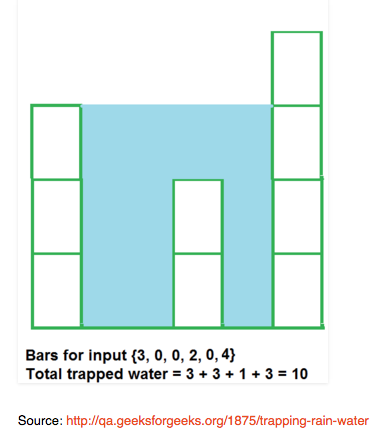

array paths
This is part 1 of 2 of the Path Problem series.
Part 1 | Part 2 - Matrix Paths
We've been getting toy problems that follow a path of traversing data in a specific way and making decisions either at junctions or at the end of the path. The goals here are here to determine how to store information and use arguments recursively (or iteratively) to carry information you need to the next step. I will keep string and array path problems combined here until I have more and can split them out.
In my mind these diagrams aren't the most accurate way of thinking about how computers solve this problem. These show the valid results, and if you want to create an algorithm to this this will be a little more overhead. Instead, we are going to write one that expands across the data you provide and fails when the data is undefined.
And where ever our boundary conditions fail we can just 'return 0;' or 'return;' depending on what we are trying to keep track of. The other important piece is that while we travel each path, we need to pass information on as arguments to the recursive function, often without modifying the functions in place to preserve what we are interested in. For example:
var moreStuff = [];
function recursive(stuff, startValue) {
stuff += 1;
var next = moreStruff.shift();
return recursive(stuff, next);
}
versus
var moreStuff = [];
function recursive(stuff, startValue) {
return recursive(stuff + 1, moreStuff.shift());
}
These kinds of problems are extremely practical. The question I received at an interview was to create a list of all the bad passwords that a user could create from their old password, to have the ability to reject it. Given a single string, given all the options of bad passwords that a user may try to generate.
Why do we do this? This is pretty straight forward. If I can come up with an algorithm to get all the too simple password modifications, what makes you think hackers aren't running these evaluations all the time? They probably are. Makes me want to go through and change some of my passwords...
Bad Passwords
//example input
var password = "secretcode",
badSubstitutions = {"s":["S","$"],"o":["0"]}
//example output
["$ecretcode","Secretcode","secretc0de","$ecretc0de","Secretc0de","secretcode"]
At some point you'll start to see that all these structures break down to these concepts of inputs and outputs and manipulations on each.
/*========================================||
|| Bad Passwords ||
|| ||
|| Given a single string, ||
|| given all the options of bad passwords ||
|| that a user may try to generate. ||
||========================================*/
//sample inputs
var string = "password",
set = {"a":["A"],"s":["S","$"],"w":["W"],"o":["0","O"],"r":["R"],"d":["D","&","6"]}
function badPasswordList(string, set) {
// start meaning the part of the string
// that's been processed already.
// end will refer to the rest of the string
// usually captured with .substr(1)
var badPasswords = [],
start = "";
// a recursive function. noticing the pattern?
function traverse(start, end) {
// our boundary, when there is no more string
// left. (one character).substr(1) === ""
if (end === "") {
// at the boundary, we can collect our
// finished bad password!
badPasswords.push(start);
return;
} else {
// this is asking if we have a character
// with lazy replacement options, i.e. s --> $
if (set[end[0]]) {
// and the trick here is to iterate
// through the array of options
for (var i = 0; i < set[end[0]].length; i++) {
// and recursively include stepping down the string.
traverse(start + set[end[0]][i], end.substr(1))
}
// otherwise process the letter as normal.
} return traverse(start + end[0], end.substr(1));
}
}
// begun the loop
traverse(start, string);
// all the different possible passwords.
return badPasswords;
}
There are 864 results! Pretty nifty. Here's a partial screenshot.

You can imagine other versions of this problem immediately. The algorithm for determining a cute phone code for your business is similar. It's going to move and create all the options, perhaps a library and remove the words that aren't intelligible.
//input
1-800-432-9023 ->
//output
[1-800-SAD-MOOD, otheroptions...,*,*,*,*]
A big reason for doing theses series is that I've really found this kind of problem hard or unnatural at first. This next problem was another real problem I received during an interview. I was able to solve it later, but the fact of the matter is that you should be able to solve these within the allotted time, simply recognizing the patterns is enough for some interviews and for some, the real answer in code has to show up.
Minimum Work Globally Problem
/*========================================||
|| Minimum work globally ||
|| ||
|| Given monthly schedules of all offices,||
|| and an 8 hour flight limit between ||
|| some of the offices, solve for minimum ||
|| work over the course of a year ||
||========================================*/
// This is testing data, correct output will
// thousands of results, all equaling 78.
var schedule = {
"MV":[1,2,3,4,5,6,7,8,9,10,11,12],
"SF":[1,2,3,4,5,6,7,8,9,10,11,12],
"NY":[1,2,3,4,5,6,7,8,9,10,11,12],
"GB":[1,2,3,4,5,6,7,8,9,10,11,12]
};
//Real data would look like this
//Hours per month excluding holidays and such
// var schedule = {
// "MV":[160,170,160,160,160,100,170,160,160,150,160,100],
// "SF":[160,120,170,160,160,170,160,160,160,170,160,160],
// "NY":[160,120,160,160,170,160,160,160,100,170,160,160],
// "GB":[160,170,160,160,160,100,170,160,160,160,160,100]
// };
// This is the table of the limits
// i.e. Great Britain is only an 8 hour limit
// from New York, but can't get to the
// the SF or MV offices.
var flights = {
"MV":["MV","SF","NY"],
"SF":["MV","SF","NY"],
"NY":["NY","GB","SF","MV"],
"GB":["GB","NY"]
};
// It could be limits in array form
// There could be other ways to
// Apply limits the problem
function minimumWork(set) {
// Determine how you want the data to be collected.
var options = {};
function traverse(hours, month, location) {
// Find a way to stop the problem.
if (month === 11) {
// Final answer stored in options
options[hours] = options[hours] || 0;
// This method is way to keeping track of each time an option came up.
// You can also keep track of the maximum, etc.
options[hours]++;
// This is an exit for the recursive function
return;
} else {
// This is way of navigating the flight options.
// You can either stay at your location, or
// move to one of the other options in the matrix.
for (var i = 0; i < flights[location].length; i++) {
// For each location, iterate to each, as long as
// you remember to go one month forward in time!
// And provide the new location to set the recursive
// function right!
traverse(hours + schedule[location][month + 1], month + 1, flights[location][i]);
}
}
}
// This is because you can start in 4 different locations.
// Failing this line, you'll have a biased tree.
// These is likely a more elegant way to start the function
// But this is here for now.
for (var startLoc in flights) {
// The way this is written above, I didn't provide the first month.
// Here's the start -> schedule[startLoc][0]
traverse(schedule[startLoc][0], 0, startLoc);
}
// The question asked for the minimum work!
// Always be sure to answer the question,
// but remember, you can access all the information
// you learned along the way, it's just how you
// structure things and if it's required.
return Math.min.apply(null,Object.keys(options));
}
console.log(minimumWork(flights));
Trapped Water Problem

While not exactly a path problem, here's another problem I'm going to leave here until I find a more fitting place for it, but it's a problem of examining trapped water. I've seen many blog posts about the topic but often in Java or C++, but also often missing a really detailed explanation for what's happening, so I'll try to include that here.
var pit = [3,0,0,2,0,4];
function trappedWater(pit){
// Starting points for analysis
var water = 0,
left = [pit[0]],
right = [],
right[pit.length-1] = pit[pit.length-1];
// Use this loop to find the top most
// left wall over the area.
for (var i = 1; i < pit.length-1; i++) {
left[i] = Math.max(left[i-1],pit[i]);
}
// Use this loop to find the top most
// right wall over the area.
for (var i = pit.length-2; i >= 0; i--) {
right[i] = Math.max(pit[i],right[i+1]);
}
// This loop will calculate out the
// water 0 + 3 + 3 + 1 + 3 + 0 needed for output
for (var i = 0; i < pit.length-1; i++) {
water += Math.min(left[i], right[i]) - pit[i];
}
return water;
}
console.log(trappedWater(pit));
These stumped me live, but after some time to think about it, I'll be ready for the next set of these, and I hope this helped you.